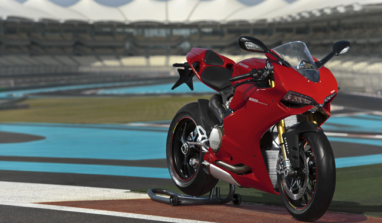

Động cơ Superquadro có những ưu điểm nổi trội như: nhẹ hơn, khả năng làm sạch nhiên liệu đốt và xả tốt hơn. Khối động cơ này còn được tích hợp hệ thống vận hành theo những chế độ được cài đặt sẵn với tên gọi Ride by wire (RbW). Những tính năng cao cấp khác như hệ thống chống bó cứng phanh ABS, hệ kiểm soát lực kéo Ducati (DTC), giảm xóc điện tử Ducati (DES), hộp số Ducati Quick-Shift (DQS), và hệ thống kiểm soát phanh (EBC) cũng không hề vắng mặt trên một chiếc xe thể thao như 1199 Panigale.
Bên cạnh đó, Ducati còn đưa vào 1199 Panigale những trang bị "hàng hiệu" như giảm xóc hiệu Ohlin, phanh Brembo Monobloc của xe đua chuyên nghiệp và bộ ống xả độ Termignoni.
Ducati 1199 Panigale là mẫu xe được nhiều người mong đợi trong năm 2012. Và tại vòng đua Yas Marina - Abu Dhabi, hãng đã có buổi ra mắt và chạy thử mẫu xe này.
Trong buổi ra mắt tại Abu Dhabi, Ducati đã trình làng đủ bộ 3 Panigale của mình gồm có 1199 Panigale, 1199 Panigale S và 1199 Panigale Tricolore. Cả 3 mẫu xe 1199 Panigale đều sở hữu bộ động cơ Superquadro L-Twin, 4 kỳ và được làm mát bằng dung dịch. Có dung tích xy lanh 1199cc và được tích hợp hệ thống điều khiển van xả nạp Desmodronic, khối động cơ này có thể mang lại cho chiếc siêu xe sắp được trình làng của Ducati 195 mã lực tại vòng tua máy 10.750 vòng/phút và mô-men xoắn cực đại 132Nm tại vòng tua máy 9.000 vòng/phút. Để đạt được con số này, hầu hết các linh kiện quan trọng trong động cơ đều được sử dụng bằng hợp kim Magie và Titanium.
